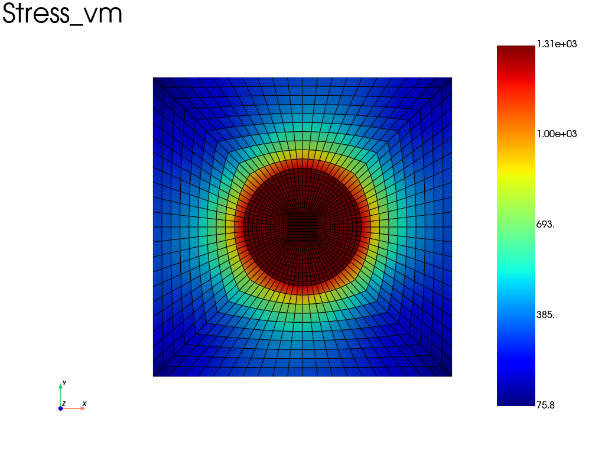

Note
Go to the end to download the full example code.
Heterogeneous Material: Inclusion in a Matrix under Thermal Loading
This example demonstrates how to model a composite material consisting of a disk-shaped inclusion embedded within a matrix. It utilizes the Heterogeneous constitutive law to manage different material behaviors (Elastic and Elastoplastic) within a single Assembly.
import fedoo as fd
import numpy as np
Geometry and Mesh
First, we generate a mesh for the matrix (a plate with a hole) and a mesh for the inclusion (a disk). Both meshes are then merged to create a continuous domain.
# Matrix: plate with a central hole
mesh = fd.mesh.hole_plate_mesh(
nr=11, nt=11, length=100, height=100, radius=20, elm_type="quad4", name="Domain"
)
mesh.element_sets["matrix"] = np.arange(0, mesh.n_elements)
# Inclusion: disk mesh fitting the hole
mesh_disk = fd.mesh.disk_mesh(20, 11, 11)
mesh_disk.element_sets["inclusion"] = np.arange(0, mesh_disk.n_elements)
# Glue the inclusion to the matrix
# We merge nodes at the interface (hole_edge and boundary of the disk)
mesh = mesh + mesh_disk
mesh.merge_nodes(np.c_[mesh.node_sets["hole_edge"], mesh.node_sets["boundary"]])
Modeling Space and Field Definitions
We define a 2D modeling space with a plane stress assumption. A custom temperature field ‘Temp’ is added to the space. This field is automatically detected by the Simcoon constituve laws.
space = fd.ModelingSpace("2Dstress")
space.new_variable("Temp")
Constitutive Laws and Assembly
We define two distinct materials using the Simcoon interface: 1. An isotropic elastic material for the matrix. 2. An isotropic elastoplastic material (EPICP) for the inclusion. Both are combined into a single Heterogeneous constitutive law.
# Matrix material: Elastic Isotropic with Thermal Expansion
props_matrix = np.array(
[
50e3, # Young's Modulus (E)
0.3, # Poisson's ratio (nu)
1e-5, # Coefficient of thermal expansion
]
)
mat_matrix = fd.constitutivelaw.Simcoon("ELISO", props_matrix)
# Inclusion material: Elastoplastic with Power Law Hardening
props_inclusion = np.array(
[
200e3, # E
0.3, # nu
1e-3, # Thermal expansion
200, # Yield stress
1000, # Hardening power law coefficient
0.3, # Hardening power law exponent
]
)
mat_inclusion = fd.constitutivelaw.Simcoon("EPICP", props_inclusion)
# Define the Heterogeneous material mapping element sets to laws
material = fd.constitutivelaw.Heterogeneous(
(mat_matrix, mat_inclusion), ("matrix", "inclusion")
)
# Build the weak form and the global assembly
wf = fd.weakform.StressEquilibrium(material)
assembly = fd.Assembly.create(wf, mesh)
Problem Definition and Boundary Conditions
A non-linear static problem is defined to account for the plastic behavior of the inclusion. We apply Dirichlet conditions for displacement (clamped edges) and a time-dependent temperature evolution.
pb = fd.problem.NonLinear(assembly, nlgeom=True)
pb.set_nr_criterion("Displacement")
# Boundary conditions: Clamp all exterior nodes
nodes_ext = np.concatenate(
[mesh.node_sets[elset] for elset in ["left", "right", "bottom", "top"]]
) # some nodes are duplicated in nodes_ext, but this is well managed by fedoo
pb.bc.add("Dirichlet", nodes_ext, "Disp", 0)
# Thermal loading: Temperature increases then decreases over time
def time_evolution(t):
return 2 * t if t < 0.5 else 2 * (1 - t)
all_nodes = np.arange(mesh.n_nodes)
pb.bc.add("Dirichlet", all_nodes, "Temp", 400, time_func=time_evolution)
# Define output results for the whole assembly
res = pb.add_output("results", assembly, ["Stress", "Strain", "Disp", "Temp"])
Solving and Post-Treatment
The problem is solved over a predefined time range. Finally, we plot the Von Mises stress distribution across the entire heterogeneous domain.
pb.nlsolve(tmax=2, print_info=1)
# Plotting the Von Mises stress at the last time increment
res.plot("Stress", "vm")

Iter 1 - Time: 0.10000 - dt 0.10000 - NR iter: 1 - Err: 0.00000
Iter 2 - Time: 0.20000 - dt 0.12500 - NR iter: 1 - Err: 0.00000
Iter 3 - Time: 0.30000 - dt 0.12500 - NR iter: 1 - Err: 0.00047
Iter 4 - Time: 0.40000 - dt 0.12500 - NR iter: 1 - Err: 0.00045
Iter 5 - Time: 0.50000 - dt 0.12500 - NR iter: 1 - Err: 0.00041
Iter 6 - Time: 0.60000 - dt 0.12500 - NR iter: 1 - Err: 0.00036
Iter 7 - Time: 0.70000 - dt 0.12500 - NR iter: 1 - Err: 0.00032
Iter 8 - Time: 0.80000 - dt 0.12500 - NR iter: 1 - Err: 0.00027
Iter 9 - Time: 0.90000 - dt 0.12500 - NR iter: 1 - Err: 0.00024
Iter 10 - Time: 1.00000 - dt 0.12500 - NR iter: 1 - Err: 0.00020
Iter 11 - Time: 1.10000 - dt 0.12500 - NR iter: 1 - Err: 0.00017
Iter 12 - Time: 1.20000 - dt 0.12500 - NR iter: 1 - Err: 0.00141
Iter 13 - Time: 1.30000 - dt 0.12500 - NR iter: 1 - Err: 0.00118
Iter 14 - Time: 1.40000 - dt 0.12500 - NR iter: 1 - Err: 0.00099
Iter 15 - Time: 1.50000 - dt 0.12500 - NR iter: 1 - Err: 0.00083
Iter 16 - Time: 1.60000 - dt 0.12500 - NR iter: 1 - Err: 0.00069
Iter 17 - Time: 1.70000 - dt 0.12500 - NR iter: 1 - Err: 0.00058
Iter 18 - Time: 1.80000 - dt 0.12500 - NR iter: 1 - Err: 0.00048
Iter 19 - Time: 1.90000 - dt 0.12500 - NR iter: 1 - Err: 0.00040
Iter 20 - Time: 2.00000 - dt 0.12500 - NR iter: 1 - Err: 0.00033
Total running time of the script: (0 minutes 3.774 seconds)